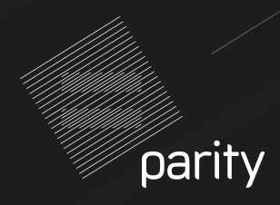
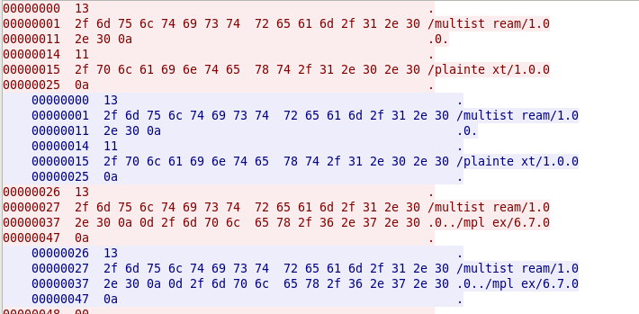
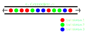

class: center, middle # Libp2p - zkSummit ## Power to the peers <div style="position: absolute; bottom: 5%; left: 0; right: 0;"> <div style="text-align: center">  </div> </div> <div style="position: absolute; bottom: 5%; left: 5%;"> .left[ <img src="twitter.png" alt="Twitter" height="16" /> twitter.com/tomaka17<br /> <img src="github.png" alt="GitHub" height="16" /> github.com/tomaka<br /> ] </div> <div style="position: absolute; bottom: 5%; right: 5%;"> .right[ twitter.com/jFransham <img src="twitter.png" alt="Twitter" height="16" /><br /> github.com/Vurich <img src="github.png" alt="GitHub" height="16" /><br /> ] </div> --- # What is libp2p? - Peer-to-peer networking protocol - Implementations in Go, JavaScript and Rust (us!) - Used by IPFS - Will be used by Polkadot and Parity - Possibly by Ethereum in the future (discussions are open) <div style="position: absolute; bottom: 5%; left: 5%;"> .left[ <img src="ipfs.png" alt="IPFS" height="64" /> ] </div> <div style="position: absolute; bottom: 5%; left: 0; right: 0;"> <div style="text-align: center"> <img src="polkadot.png" alt="Polkadot" height="64" /> </div> </div> <div style="position: absolute; bottom: 5%; right: 5%;"> .right[ ] </div> --- # Multiaddress In traditional peer-to-peer systems, a node is contacted through an IP address, a TCP port and an UDP port. In libp2p, a node is contacted through a *multiaddress*. Examples: - `/ip4/80.129.4.75/tcp/8200` - `/ip4/196.27.207.12/tcp/10250/ws` - `/ip6/2001:db8:a0b:12f0::1/udp/3050` - `/dns/example.com/tcp/5000` - `/ip4/125.90.85.23/tcp/5000/p2p-circuit/ip4/90.2.98.122/tcp/9001` **Note**: Nodes can communicate with each other entirely through WebSockets, meaning that we can run a JavaScript or WASM node inside a browser. --- # Protocol negotiation Once a connection between two nodes is established, the dialer negotiates with the listener a protocol to apply to the connection. Example communications between two nodes:  In this example, we negotiate the protocol `/plaintext/1.0.0`, then the protocol `/mplex/6.7.0`. --- # Encryption layer The first protocol negotiated when a connection is open is the security layer. Two protocols exist: - *plaintext*, a basic pass-through protocol. Useful for debugging. - *secio*, that provides full encryption. ## Secio Standard Diffie-Hellman key exchange. The cipher, hash function, and key exchange algorithm are not hardcoded in the protocol, and are also negotiated between the two nodes during the *secio* handshake. --- # Multiplexing On top of the security layer, the second protocol that is negotiated is the multiplexing layer. Three protocols exist: - *mplex* - *yamux* (only implemented in Go) - *spdy* (only implemented in JavaScript) <div style="text-align:center">  </div> Multiplexing allows both nodes to open multiple substreams on a single connection, where each of these substreams uses a different protocol and is treated as if it was separate connection. --- # Final protocols In each multiplexed substream, a final protocol is negotiated. Example of some commonly-supported protocols: - *identify* - *ping* - *kademlia* - *floodsub* - etc. Or you can also create your own protocol, which is often what you want. Example: - IPFS uses the *bitswap* protocol. - Polkadot, Parity and Ethereum would also use their own custom protocol. --- # Protocol detail: identify Whenever a dialer connects to a listener, the listener immediately sends back information about itself. These information include: - The public key of the node (useful if secio isn't used). - The multiaddresses the node is listening on. - The protocols a node supports. - The version of the client the node uses. - The "global" protocol that the node wants (eg. "ipfs", "polkadot") **Note**: A common situation is that A dials B, then B opens a multiplexed substream to A and negotiates the *identify* protocol on it. It is then A that sends information about itself to B, allowing B to learn about A. --- # Interlude: Multihash The ID of a node is not tied to any specific algorithm and instead is provided in the *multihash* format. --- # Protocol detail: floodsub Publish-subscribe protocol. The *floodsub* protocols allows you to broadcast messages over the network. A node can send a message to another node through this protocol, and the message will then be broadcasted to all the other nodes it is connected to. Each message has a topic. Nodes subscribe to specific topics and only receive messages that match the topic they are registered to. Example usages: - Messages in a chat application. - Broadcasting new blocks in a blockchain. Messages can be signed in order to prove the author. --- # Protocol detail: kademlia Allows peer discovery and record store. --- # Designing a small chat application Let's write a small peer-to-peer application that allows all the members of the network to chat together. How it all plugs together: - When they start, nodes have absolutely no idea how to access other nodes. In order to be able to function, we need to have a list of *bootstrap nodes*. - When a node starts, it generates a key pair for itself or loads an existing key pair from the disk. - It then uses the Kademlia protocol in order to discover nodes whose IDs are near its own key pair. This process involves connecting to some of the boostrap nodes, opening the Kademlia protocol. TODO: meh - It will then connect to a certain number of closest nodes and open the *floodsub* protocol. - Any message received from any of these nodes through *floodsub* will be printed to stdout. Anything received by stdin will be broadcasted as a message to all the network connected through *floodsub*. --- # Walkthrough #1: Initialization Nodes have two modes: bootstrap, or not. We create what is called a *peerstore*, and store the bootstrap node in it (unless we are the bootstrap node). ```rust let bootstrap_peer_id = ...; // some hardcoded value let peer_store = Arc::new(MemoryPeerstore::empty()); if !is_bootstrap { peer_store .peer_or_create(&bootstrap_peer_id) .add_addr("/ip4/127.0.0.1/tcp/10101".parse().unwrap(), Duration::from_secs(3600 * 24 * 365)); } let my_peer_id = if is_bootstrap { bootstrap_peer_id } else { let key = (0..2048).map(|_| rand::random::<u8>()).collect::<Vec<_>>(); PeerId::from_public_key(&key) }; ``` --- # Walkthrough #2: Build the transport ```rust let mut core = tokio_core::reactor::Core::new().unwrap(); let transport = IdentifyTransport::new(WsConfig::new(libp2p_tcp_transport::TcpConfig::new(core.handle())) .or_transport(libp2p_tcp_transport::TcpConfig::new(core.handle())) .with_upgrade(libp2p_swarm::PlainTextConfig) .with_upgrade(multiplex::MultiplexConfig) .into_connection_reuse(), peer_store.clone()); ```